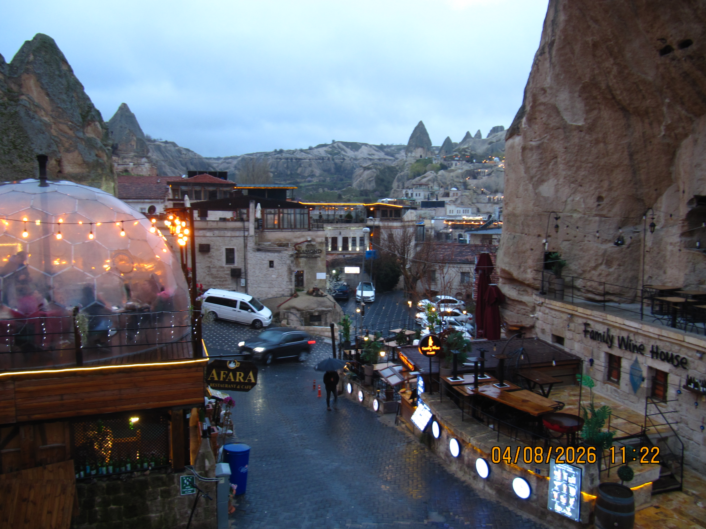
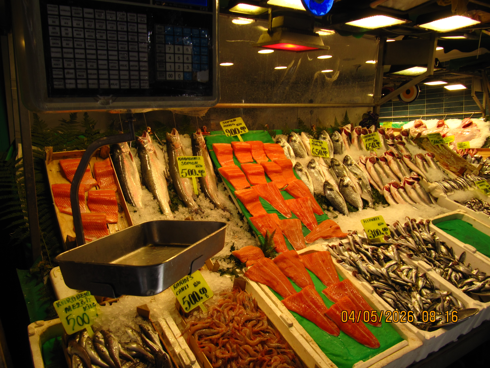
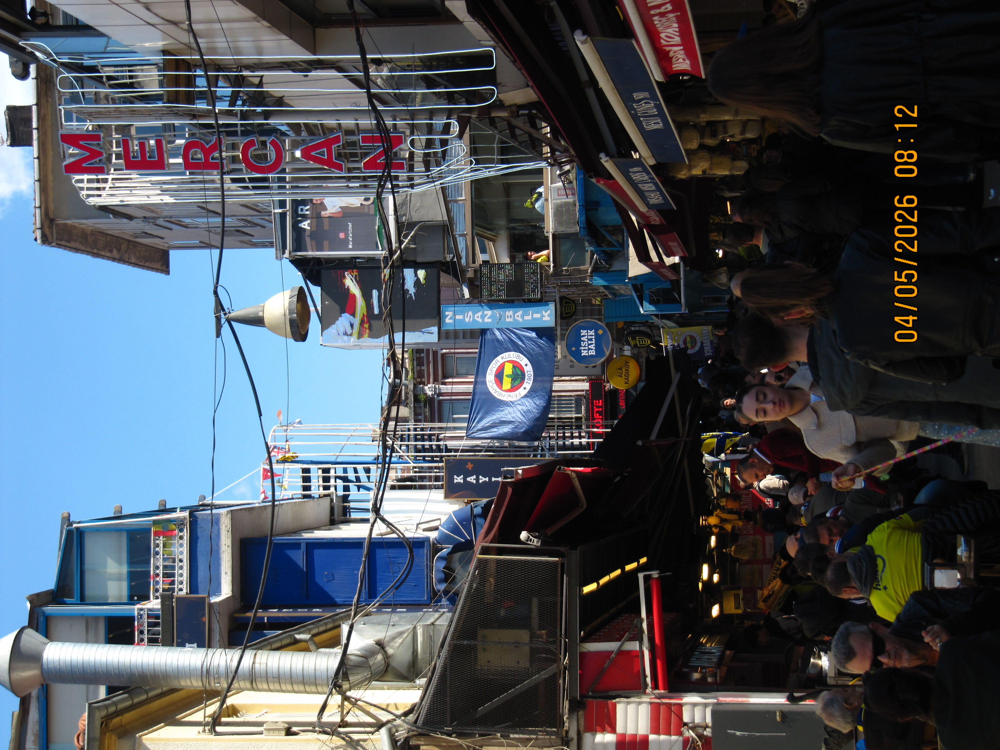

Using Agarose-Alginate Hydrogels to Retain EAB Sensor Signals in the Presence of Proteins
A poster presentation on electrochemical aptamer-based sensors and various iterations of hydrogels used to mitigate protein fouling.
Hi! I'm a first-year Undergraduate student studying Electrical Engineering at Johns Hopkins University.
I'm interested in electronics and circuit design as well as pure mathematics. I enjoy traveling, photography, and rock climbing.
A poster presentation on electrochemical aptamer-based sensors and various iterations of hydrogels used to mitigate protein fouling.
Research poster · Summer 2024
A poster presentation on electrochemical aptamer-based sensors and various iterations of hydrogels used to mitigate protein fouling.
The problem
Electrochemical Aptamer-Based sensors are biosensors that use aptamers to identify targets, bind to them, then transfer electrons between it and the electrode surface which is called the "signal output". However, during long intervals of scanning, there is accumulating protein build up (aka protein fouling) which hinders the ability for the aptamer to bind to its target and therefore diminishes the signal output.
What I did
What I found
The data suggest that there is a possibility that Vanillin could be crosslinking the hydrogel through a Hydrogen bond resulting in a higher signal output.
Experience
Aug 2026 · Present
Johns Hopkins University
Jun 2024 · Aug 2024
Netz Lab · Baltimore, MD
Conducted research with the Netz Lab (now at UNC Chapel Hill) to better understand affinity-based receptors and forward development for implantable biosensors.
Photography



About
I make stuff in Blender
Skills